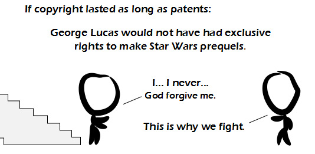

Comic JK 867
When I Feel Like It
⇤
<
?
>
⇥

⇤
<
?
>
⇥
Forum
.
RSS
.
Digg
.
Facebook
.
Reddit
.
Twitter
.
Stumbleupon
Enter your thoughts on number 867 here. Please, no spamming, trolling, or phreaking. Or making Star Wars prequels. I used to have a cut version of the prequels with only the badass scenes... The podrace, the darth maul fight, the Geonosis part of ep 2, and pretty much just the swordplay from ep 3. Runtime: ~2 hours. mn Amazing. A blank message board, So I'll post within it a word. Some green on the black, The silence goes slack, Behold, a rhyme here just recurred. (Occurred?) >The message board no longer blank, >I now wait for some mother prank. >Instead of humor, >I heard a rumor: >Your anus desires a frank. >>SHUT UP NO ONE LIKES YOU. >>>Tisk tisk... I actually liked that post. >>>> Me too >>>>> Thanks! Ahem... is the right to make (pre|se)quels covered under copyright? I thought it would have been covered under trademark or something. I mean, shouldn't copyright apply only to works that already exist? > {pr,s}equels are derivative works which are covered under copyright law. :)-8|-< Star wars prequels are an educational example as to why technology and high budgets are pretty much meaningless for making movies that are actually good. This straw man was stupid yesterday. Why do it again? >This one is made of tin. >>oil can! yes he can! >>>Because it show that copyright lasts too long...? How is it a strawman? >>>> It's a straw man because it's comparing patents to copyright, when they're hardly even close to the same thing. >>>>> I disagree with you. Though it would be neat if the next comic addressed the this issue by illustrating the similarities and differences. This is NOT a straw man argument. The claim in the previous comment box that, while someone's exclusive ownership of transistors would impede humanity's technological progress, someone else's exclusive ownership of plot/characters of a book would have no effect on humanity's artistic/cultural progress, could only have been written by someone who has never once created a work of art. The analogy transistors:microprocessors::Grimm:Disney is undeniable. Please, try to deny it. >HEY! That's false! I drew a snowman once! >Yes the analogy is undeniable, but it's still a straw man. Assertion: Copyright terms are too long. Analogy given: Long PATENT terms would have resulted in less technical innovation. Straw man: Since long patent terms would have resulted in this bad bad stuff, COPYRIGHT terms are also too long. This is absolutely and undeniably a straw man argument. >> You did it wrong. In comic 866 it says long patent terms (as in: copyright long) will stifle invention. That YOU draw the conclusion that the comic meant to imply that copyright terms are too long is YOUR straw man, good sir. It only shows that a single entity having monopoly over a resource (whether it be natural or intellectual) isn't a good thing. >Do I need to also do the REVERSE to show how this comic is also a straw man? >> Yes. Actually, instead of "also" you can just replace the original with the correct argument. >> I expect this to get deleted, as there are always crybabies on here deleting things which they don't like but can't argue against. >>>That's a pessimistic outlook. I check back here several times a day and I rarely see things get deleted. In fact I see a lot of intact spirited discussion on here. >>>>I really like the intact spirited discussions. Unfortunately there _are_ cases where a crybaby comes along and clears it out, which is why there are sometimes people/places keeping backups. >>>> "rarely see things get deleted" my anus. Funny jokes about your anus are deleted very often. >>>>> If by "deleted" you mean "enhanced"! >>>>>> The only one who considers them enhanced is the freak with the anus obsession. I bet he's a homophobe and closet gay.